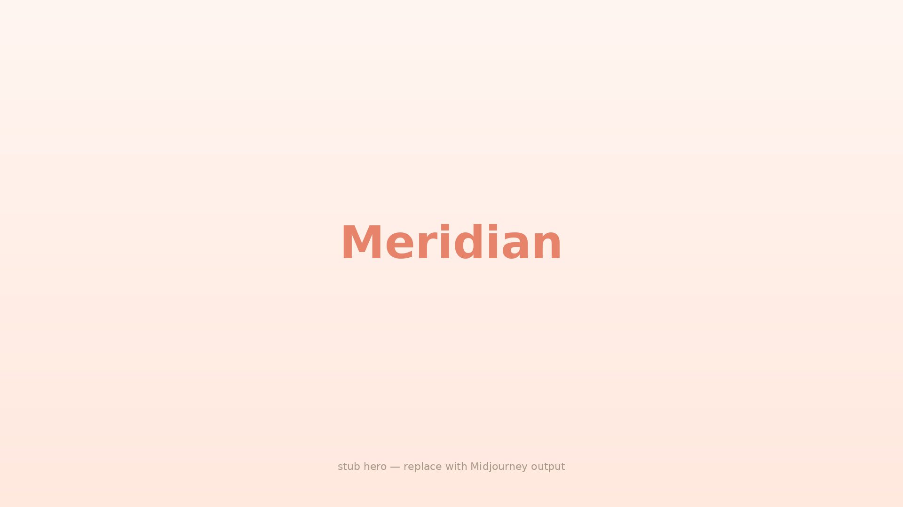

A scroll-driven memory timeline. Cards with photos appear as you scroll; a map in the background draws travel lines between them.
Drop a folder of photos in, get a beautiful scrollable trip-map you can host anywhere.
Built originally as a personal birthday gift. Now open source.
Gather your photos, videos and music
bun run triageExtracts locations, looks up weather, and creates your story.
bun run devReads the story you built to create the scroll-driven timeline.
Two datasets, each walking through the full feature set.
A 5-day New York trip — arrival, sights, food, transit between memories.
Open NY Trip →"How we met" — two cities, a winter of dates, an opening arc between Leuven and Antwerp.
Open Love Story →git clone https://github.com/Laoujin/Meridian
cd meridian
# 1. Ingest your photos → writes data/<your-story>/
cd triage && bun install && bun run triage
# 2. View the timeline
cd ../app && bun install && bun run dev